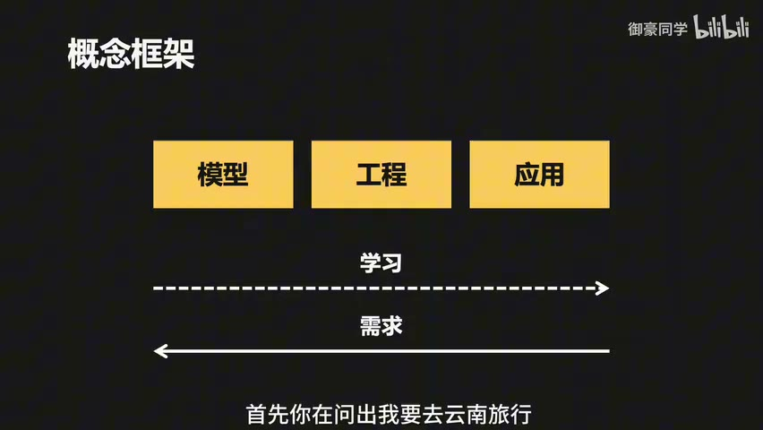

原视频 · 在线回看
点击后联网加载 B 站播放器；本地不下载整段视频。

原视频 · 在线回看
点击后联网加载 B 站播放器；本地不下载整段视频。
来源：御豪同学｜AI 的核心概念从头梳理 · 48 分 6 秒 · 深度阅读
你在聊天框里输入“我想去云南旅行”，随后收到一份考虑了天气、路线和攻略的建议。我们很容易把整个过程想成“模型听懂了问题，然后给出答案”。但如果天气是刚查询的，路线来自外部服务，攻略又来自网页，那么中间一定还有其他程序在工作。模型怎样知道可以使用哪些工具？工具结果怎样变成你最后读到的文字？从这个问题出发，许多容易混在一起的 AI 概念就有了位置。
先保留三个角色：模型负责根据输入生成输出，工程系统把模型、数据和工具组织起来，应用把最终能力呈现给用户。我们在网页里看到的聊天框属于应用。它后面可能只调用模型一次，也可能安排多次调用、搜索与检查。外观相似的两个聊天框，背后的处理过程可以很不一样。
仍然用旅行问题来看。一种可能的实现是：应用收到问题后，工程系统先向模型提供可用工具的说明，让它判断是否需要查询天气。确定要查之后，再取得地点和日期范围等参数，调用真正的天气服务。天气结果返回后，系统把结果交给模型，让它组织成容易理解的建议，最后由应用显示给你。
这是一种帮助理解分工的流程，不代表每个产品都恰好分成三次模型调用。有的模型可以在一次输出中同时选择工具并填写参数，有的应用会把任务拆得更细。重要的是，选择工具、执行工具、解释结果可以由不同部分承担。模型即使能够写出一个查询请求，也还需要程序把请求送到实际服务，并把返回内容带回来。
学习时，我们常从模型原理开始，再了解怎样开发系统，最后接触产品。但实际需求往往从另一端出现：“帮我规划一次旅行”“把这些资料整理成可以查询的知识库”。先知道用户要完成什么，再决定需要怎样的工程和模型，比较容易避免为了使用某个新名词而增加步骤。
| 部分 | 旅行问题里做什么 | 仅靠它还缺什么 |
|---|---|---|
| 模型 | 理解要求，提出调用或组织建议 | 当前天气等外部信息，以及实际执行能力 |
| 工程系统 | 准备输入，连接工具，保存过程，检查结果 | 用户具体需要怎样的体验 |
| 应用 | 接收要求、显示结果、让用户继续操作 | 背后的模型与数据处理能力 |
这三层也帮助我们解释失败。页面按钮没有反应，需要查应用和程序；天气接口没有返回结果，需要查工具连接；结果已经给到模型，建议却把日期弄错，则要看模型输入和输出。仅用“AI 不好用”概括，会把需要检查的位置一起遮住。
LLM 是 Large Language Model，大语言模型的缩写。这里用常见的自回归生成方式来建立直觉：给模型一段当前内容，它计算下一个 token 的概率分布，再从中选出下一项。Token 是模型处理文字的单位，可能对应一个字、一个词的一部分或其他文本片段，不能始终当成完整汉字或单词。
我们用一句很短的话感受这个过程。问题是“这期视频怎么样”，回答已经写到“这期视频”。模型接下来可能认为“很”比较合适，也可能认为“特别”合适。选出“很”以后，当前回答变成“这期视频很”，模型再次计算，下一项可能是“好”，也可能是“抽象”。已经生成的内容会参与下一步判断，所以一句话是逐步形成的。
图中的公式可以写成：
这里不需要先学复杂数学。 表示模型这次看到的输入， 表示训练得到的参数， 表示对下一项的预测分布。通常在一次普通对话生成期间，参数保持不变；随着回答不断写出，参与计算的输入内容在变化。图里的概率只是说明工作方式的示意数字，不能当作真实模型对这句话固定给出的测量值。
为什么同一个问题，重复问会得到不同说法？生成时不一定永远取概率最高的一项，还可以按分布采样。Temperature，也就是温度参数，会影响采样分布的集中程度，从而影响输出的变化范围。即使某次较少见的词被选中，只要前文改变，后面的生成路线也会跟着变化。这里解释了输出差异的一项来源，并不意味着调一个参数就能保证任何系统完全重复同一答案。
这对日常聊天未必是问题，对要求稳定格式和可靠结果的任务，却值得注意。我们希望模型多次处理相同类型的输入时，重要条件不被忽略，输出能被后续程序使用。后面介绍的提示词、工作流和检查机制，都在尝试改善这类表现。
我们输入“我想去云南旅行”，模型实际收到的内容可能还包括系统要求、之前几轮对话、工具说明，以及刚查到的天气数据。这些共同构成当前上下文。应用会以相应格式组织它们，再交给模型。因此，用户输入很短，并不表示一次调用只处理了几个字。
上下文窗口，是模型一次能够处理的上下文长度范围。这个范围有限，处理大量内容也会增加计算与费用。如果把所有历史对话、所有工具说明和所有资料都放进去，可能很快接近限制；即使仍然放得下，模型也要在更多内容中找出与当前任务有关的部分。后面我们会看到，RAG 和上下文管理都与这项限制有关。
模型参数与上下文也需要分开。参数来自训练，是模型已经学到的计算结构；上下文是当前这次任务提供的材料。把新的天气结果放进上下文，可以让模型在这次回答里使用它，并没有自动把这份天气写进模型参数。这个区别会帮助我们理解，为什么检索资料和重新训练模型是两种不同的工作。
模型文件放在硬盘里，还不会自行回答问题。推理引擎负责加载模型，并在计算设备上执行生成所需的计算。可以借用安装游戏的直觉：拥有游戏内容，还需要能够运行它的环境。对于模型，运行方式还涉及计算资源以及向其他程序提供怎样的调用入口。
有些入口是命令行，用户输入命令与模型交互；有些入口是 API，其他程序按照规定格式发送请求、接收结果。带图形界面的应用也可以建立在这些入口之上。这里用 Ollama 加本地模型作例子，说明模型怎样在个人电脑上成为可以调用的服务。推理引擎、模型本身和聊天界面各有职责，不必把它们混成同一件软件。
使用云端聊天服务时，这一层往往已经由服务方安排好，用户不需要自己选择如何加载模型。希望在本地处理个人笔记等资料时，运行环境就变成需要自己考虑的一部分。本地部署改变了数据与计算发生的位置，也带来硬件和维护要求；是否选择它，仍要回到实际任务与资源条件。
最初我们也许只问一句话，后来希望模型承担更复杂的任务，就会开始补充角色、背景、步骤和输出要求。Prompt Engineering，即提示词工程，可以先理解为反复调整这些说明，让模型更容易形成符合任务的回答。它影响的是模型当前接收的输入，不会因为写上“你是一位专家”，就直接改变模型已经训练好的参数。
指标涨跌的例子很直观。我们希望模型比较昨天和今天的数值，然后只输出“上涨”或“下跌”。任务说明交代要比较什么，背景提供两天的数值，问题要求作出判断，输出约定则限制回答形式。少了数值，模型无从判断；少了格式要求，它可能写出一大段解释，后面的程序却只期待两个字。
这也让我们看见，清楚的提示词应补足任务条件。如果两天数值相同，只有“上涨”和“下跌”两个选项就不够了。这个补充情形帮助检查示例的边界：输出格式可以让程序更容易处理结果，但格式本身也需要覆盖实际会发生的情况。限制得很严格，却没有给正确答案留位置，同样会制造错误。
另一种方式是在输入里给出少量问答示例，称为 few-shot prompting。比如先提供“熟透的香蕉是什么颜色——黄色”这样的简单示例，让模型了解需要怎样回答。示例同时展示内容关系和表达形式，往往比只写抽象要求更具体。当然，它是否适用于后续问题，还要看任务之间是否相似。
分步骤说明则帮助模型处理需要连续判断的任务。也可以让它比较几条候选思路，再选择更合适的路线。这里借用了 Chain of Thought 与 Tree of Thoughts 的直觉来说明逐步处理和分支比较。写一句“让三位专家讨论”，只能算提示方式；是否真的建立了多分支搜索、评价与选择，还要看程序怎样实现。我们关注的是这些安排给当前任务增加了什么帮助。
现在我们想根据天气给出增减衣物的建议。查询未来几天的天气、分析变化、把建议发给用户，这几步事先就知道。我们可以让程序按顺序执行，形成工作流：先调用天气数据源，再把数据交给模型分析，最后把结果显示在页面或发送出来。
在这个流程里，查询和发送可以由普通程序完成，不需要每一步都让模型重新决定。模型参与的是适合它处理的部分，例如把几天的气温与降水情况整理成易读建议。把确定步骤交给确定程序，有助于减少不必要的模型调用，也让我们更容易知道每一步期待得到什么。
工作流不要求所有步骤都简单。它可以有条件分支，也可以在某一步失败后重试。这里最需要抓住的特点，是主要处理路径由开发者事先安排。用户发来请求，系统沿已经设计好的路径走。这适合流程比较明确的任务，也方便逐步检查结果。
很多任务无法提前把所有步骤写死。分析一个陌生问题时，可能先读资料，读完才发现需要查询另一份文件；也可能某个工具没有结果，需要换一种办法。我们希望模型根据当前情况决定下一步使用什么工具、寻找什么信息，这就走向了 Agent，也常译作智能体。
一个常见 Agent 系统会包含任务说明、模型、记忆和工具。任务说明告诉它要完成什么；模型参与判断下一步；记忆保留之前的对话、操作或结果；工具让它接触外部数据并执行操作。这里的“记忆”通常需要程序保存和重新提供，并不意味着模型在每次对话后都重新训练了一遍。
天气助理可以同时说明这些部分。工具查询未来三天的天气，记忆保留查到的数据和当前任务，模型根据气温与降水变化形成建议，任务说明则约定它负责怎样帮助用户。这个例子仍然包含明确步骤，因此工作流与 Agent 可以组合使用：外层保留必要顺序，局部让模型判断怎样分析或选择工具。
完全放任模型自行决定所有事情，会增加不确定性。实际系统常给它限定范围，让关键检查和执行次序保持明确，同时允许它在范围内调整策略。两种形式的区别更适合放在“哪些决定提前写好、哪些决定留给模型”上理解，无法仅凭产品名字是否带 Agent，就判断它有多少自主性。
| 同一项天气任务 | 工作流侧重什么 | Agent 侧重什么 |
|---|---|---|
| 取得信息 | 事先安排调用哪个数据源 | 根据当前任务选择可用工具 |
| 分析过程 | 按固定步骤交给模型处理 | 根据已有结果决定是否补查或调整 |
| 执行边界 | 用程序规定路径与条件 | 在程序允许的范围内作出下一步判断 |
只有一个天气工具时，我们可以单独说明它怎样调用。工具越来越多，又要在多个应用或 Agent 中复用时，重复写适配和介绍就变成负担。MCP，即 Model Context Protocol，提供一套模型应用与工具、数据服务通信的协议。支持该协议的客户端，可以按共同方式发现并调用服务提供的能力。
仍然看天气工具。只给一个接口地址，模型未必知道需要哪些参数。工具说明应写清：它按指定日期范围查询某个地点，输入包括起止日期和地点，输出中哪些字段表示气温、哪些表示降水概率。日期格式和概率范围这样的细节，也会影响模型能否把参数填对、把返回结果读对。
| 天气工具需要说明的内容 | 为什么需要它 |
|---|---|
| 名称与用途 | 帮助模型判断当前任务是否需要它 |
| 地点和起止日期 | 确定查询的对象与范围 |
| 参数格式 | 让实际程序能够接收输入 |
| 返回字段与含义 | 避免把温度、概率等数据混淆 |
在客户端与服务端的分工中，MCP Client 负责代表应用通信，MCP Server 提供工具或数据访问能力。统一协议有助于复用连接方式，但工具本身是否可靠、模型是否填写正确、操作是否获得许可，仍然需要另外保证。MCP 也无法自动判断某份长文档中哪一段与问题相关，这会引出下一项能力。
假设 Agent 要服务客户，它可能需要读取历史记录，也需要参考服务流程和协议。把所有文档完整放进每次输入，既占空间，也让模型反复处理无关内容。我们希望根据当前问题，只把相关部分取出来。RAG 就把检索与生成接在一起：先找资料，再让模型据此处理任务。
一种常见实现是把文档按章节或内容切成片段，用 embedding 模型为片段建立向量表示，再存入可检索系统。提问时，用对应模型表示查询，搜索相近片段，并取回原文。Embedding 帮助把不同措辞联系起来；检索结果是否完整、是否真的适用，仍然需要检查，不能把“相似”直接当成“正确”。
在这张 Agent 结构图中，短期记忆保存近期对话与临时结果，较长文档在需要时通过 RAG 读取。这是一种有用的组织方式，并不表示所有长期记忆都必须用 RAG 实现。可以先记住它们解决的问题：短期记录帮助接住当前任务，外部检索帮助取得没有常驻在输入里的资料。
MCP 与 RAG 因此可以配合。MCP 规定应用怎样调用某个检索服务，RAG 相关实现决定资料怎样被找到并用于生成。一个解决连接与通信，一个组织资料查找与使用，它们有机会出现在同一次工具调用中。
现在 Agent 有工具，也能读资料，但每次创建 Excel 文件时，仍然可能需要重新规划怎样做。我们可以把这类反复使用的方法单独保存：什么时候适用、输入是什么、按哪些步骤处理、最后应得到什么文件。Skill 就提供这样一种可复用的任务说明与资源组织方式。
Excel 是一个很好的例子。工作中要把数据写入表格，生活中也可能用表格整理旅行开销，两种任务共享创建和处理 Excel 的能力。Skill 可以把共同方法保留下来，应用到不同场景；具体数据和用途则由当前任务提供。这样就不必每次在聊天里重新解释同一套要求。
常见入口文件叫 SKILL.md。里面可以说明适用条件、操作步骤和结果约束，也可以指向需要的脚本或模板。Agent 在获准使用且任务匹配时读取这些内容，把它们纳入当前处理过程。写好一份 Skill 并没有修改模型参数，它增加的是可被读取和执行的方法说明。方法是否被理解、是否正确执行，仍然需要看实际结果。
工具与 Skill 的差别也可以从 Excel 例子理解。工具提供执行某项操作的能力，例如写入文件；Skill 描述在这类任务中怎样组织操作、保留什么格式、检查什么结果。一份 Skill 可以使用多个工具，同一个工具也可以出现在不同 Skill 中。先认清这项关系，就不容易把任何工具接口都叫作 Skill，或把一份说明当作已经运行完成的结果。
任务较复杂时，可以让不同 Agent 承担不同角色，分别完成其中一部分，再由一个 Agent 或明确的工作流汇总结果。这个安排类似团队协作：各部分有各自的任务，最后需要形成一份完整交付。它可以利用分工，但分工本身还没有解决结果之间怎样衔接的问题。
我们需要知道每个角色接收什么、交出什么，以及谁检查它与其他部分是否一致。多个模型给出相同意见，也不自动说明意见正确，它们可能共享相似的错误。因此，多 Agent 可以成为一种组织形式，却不能仅凭角色数量多就保证质量。是否需要这样的安排，仍然看任务是否真的适合拆开，以及汇总能否保留重要关系。
回到前面的公式。角色要求、工具说明、查询到的文档、历史记录和 Skill 步骤，都会以相应形式进入某次模型输入，影响接下来的生成。底层模型在调用时依然根据当前内容计算输出；外部系统不断准备新的内容、执行动作，再把结果带回来。这种组织当前输入的工作，就是理解 Context Engineering，即上下文工程的一条主线。
上下文工程比写一次提示词覆盖得更广。它不仅关心任务怎样描述，也关心哪份资料应该在此刻出现，哪些历史仍然有用，工具结果要保留到什么程度。目标是让模型获得完成眼前判断所需的信息。输入越长不一定越好，关键是内容是否准确、相关，是否出现在需要它的那一步。
内容持续增加，也会接近上下文长度限制并增加成本。这里讨论了使用命令行工具或直接 API 的一些做法：在适合的任务里，可以减少反复放入冗长工具描述的负担。是否比某种 MCP 接入节省，需要比较实际说明长度、调用方式和返回结果，无法仅根据接口名字确定。更简短的输入若省掉必要含义，也可能让模型更容易犯错。
我们努力改善输入，希望模型输出合适答案。但答案看起来合理，仍然需要验证。可以借用做数学题的经验：推导得到一个结果后，再把结果代回条件，检查是否满足要求。对于 Agent，检查可能针对文件是否生成、查询是否保留条件、工具是否执行成功，以及最后的答复是否与结果一致。
Harness Engineering 在这里强调围绕模型建立执行、验证和反馈机制。工具失败或返回超时，系统需要知道怎样处理；生成结果不满足要求，需要有明确反馈；任务完成后，需要有依据判断是否可以结束。这个词在不同实现中覆盖的范围会有差异，可以先把它理解为支撑 Agent 稳定运行的外部安排。它增加可靠性检查，无法让任何模型从此绝不出错。
| 需要考虑的方面 | 可以问的具体问题 |
|---|---|
| 系统结构 | 哪些步骤固定，哪些决定交给模型 |
| 工具设计 | 工具说明是否清楚，输入和返回怎样处理 |
| 外部资料 | 文档怎样整理，什么时候提供给模型 |
| 失败处理 | 查询失败、执行错误或超时后怎么办 |
| 安全限制 | 哪些输入、输出和操作需要检查或禁止 |
| 观察与评价 | 怎样看到执行过程，怎样判断结果是否合格 |
| 产品体验 | 用户要解决什么，哪里需要确认或继续操作 |
这七个方面把开头的三层又连起来了。用户只说“我想去云南旅行”，应用需要让他容易表达需求，工程需要准备资料、调用工具并检查结果，模型则参与理解和组织建议。要得到稳定可用的产品，几部分都要工作。以后遇到新的 AI 名词，可以先问它解决的是哪一个具体问题，再把它放进这条过程里理解。
模型负责生成，工程负责把模型与资料、工具和检查组织起来，应用负责让用户完成任务；Agent、RAG、MCP 与 Skill 分别参与其中不同的工作。
从旅行建议出发，我们先分清模型、工程与应用。模型根据当前上下文逐步生成，提示词让任务要求更清楚。工作流安排固定步骤，Agent 在允许范围内决定后续动作。MCP 连接工具，RAG 查找资料，Skill 保存可复用方法。上下文工程安排模型此刻看到什么，外部执行与验证机制继续检查事情是否做成。
沿用天气助理即可。先说清查询数据、分析变化和发送建议分别由哪一部分完成，再设想天气查询失败会怎样影响结果。接着看上面的七项问题，挑出这次失败真正需要处理的两项。能够说明输入、动作和结果怎样接上，比一次背完所有缩写更有帮助。